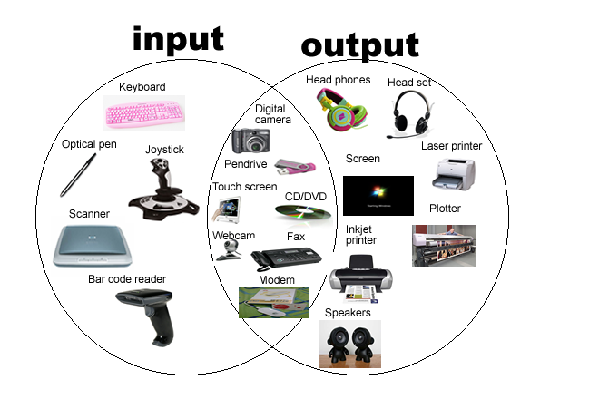

Hardware - How it creates, powers, and runs a functional computer
A computer can simply be thought of as an input/output machine. It takes input from the user via
peripherals, processes it, and then generates output also via peripheral devices. All computers
are powered by some form of PSU, and all computers must contain a central processing unit. This
processor is assisted via the general processing unit to execute all of the information and
graphics that run through the computer. There are several components that can be used to
customize the user's experience, such as increase RAM speed or create more storage, and these are
usually connected on or around the motherboard. Computers can physically become much more complex
depending on what their intended uses are, but these are the main physical components that can
normally be found in every single computing device.
Software - The programs that are used to control a computer.
Software are programs written in a programming language by a developer that allow users to interact with their computer
Types of Software
- GUI/CLI - These are the interfaces used so that software can be manipulated by the user
- OS - Apple/Microsoft/Linux
- Utility Software -
- Application Software -
Also called a main processor, its electronic circuitry executes instructions
of a computer program, such as arithmetic, logic, controlling, and input/output operations.
Computers have changed a lot over time. The first devices were so massive that a single one filled up an entire room
and took elongated periods of time to perform simple tasks. Today, we all carry computers in our pockets in the form
of smartphones and we can perform supercomputing in a matter of seconds. This increase in performance can be accredited
to the upgrades that were made to the central processing unit.
| All processors in table are made by intel |
| Processor |
Year of Release |
# of Cores |
Clock Speed |
| 2004 |
1971 |
1 |
740 KHz |
| 8086 & 8088 |
1978 |
1 |
4.77 MHz |
| 80386 |
1985 |
1 |
16 - 33 MHz |
| Pentium |
1993 |
1 |
50 MHz - 4.4 GHz |
| Pentium II Xeon |
1998 |
1 |
450 MHz |
| Pentium IV |
2000 |
1 |
2.8 GHz |
| Core 2 Duo |
2006 |
2 |
3 GHz |
| Core Sandy Bridge |
2011 |
4 - 12 |
3.3 GHz |
| Core Haswell |
2013 |
4 - 12 |
3.9 GHz |
| i9 |
2017 |
18 |
6 GHz |
A GPU performs graphics-related calculations very quickly, they were developed as a way to offload those tasks from
CPUs for graphics applications.
Many people that are interested in PCs or PC gaming are familiar with a GPU. Despite how many people know what a GPU
is and what it does, many people do not know how it works. The below video demonstrates how a Graphics Processing Unit
functions inside of a computer.
There are many different types of peripherals that can be used with computers. The main types of peripherals are the
mouse, the keyboard, the monitor, and speakers. These are the devices that are used to interact with the computer,
such as inputting information into the computer, as well as receiving output via speakers, monitors, etc.
